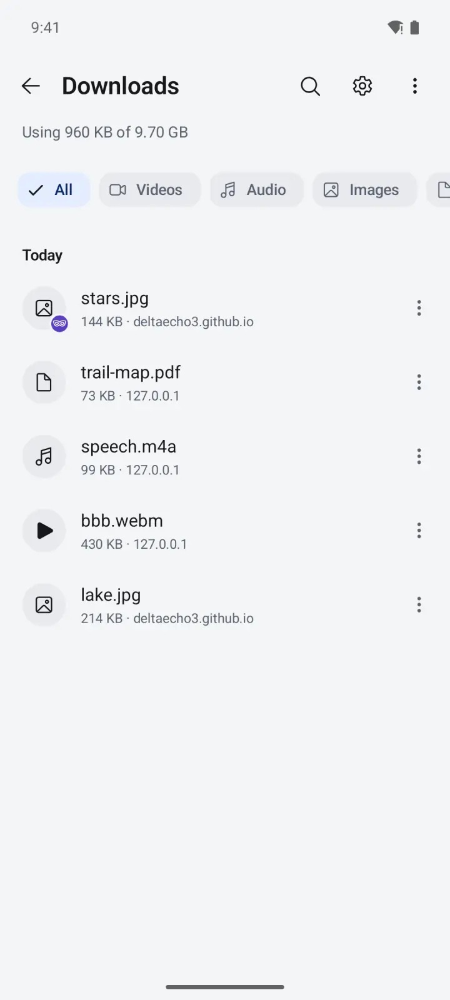
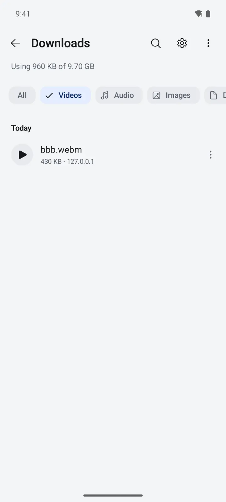
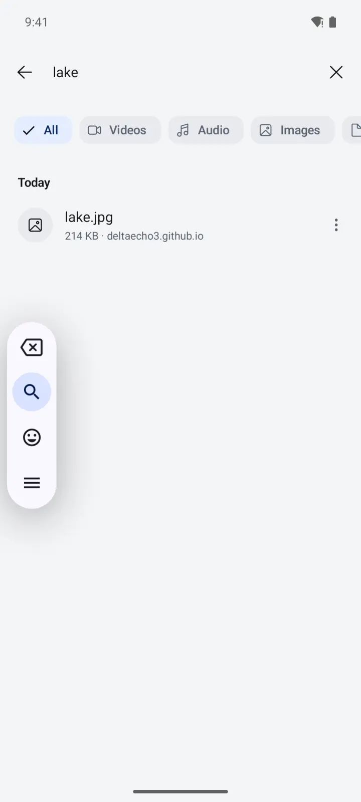
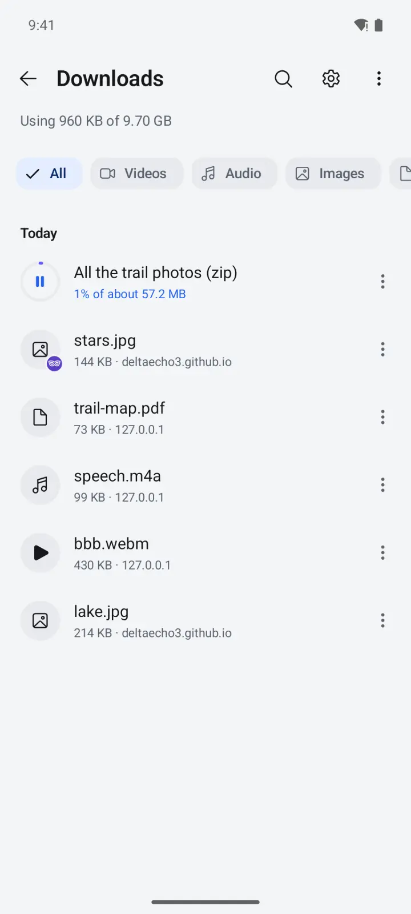
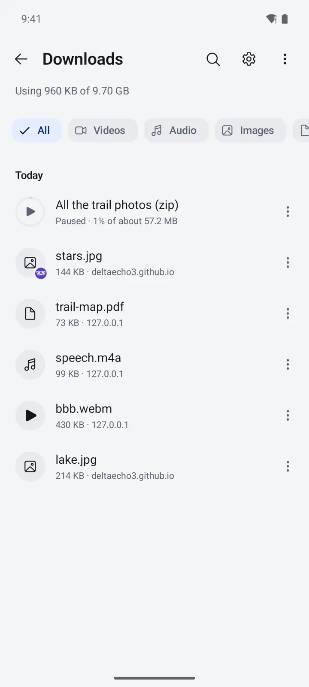
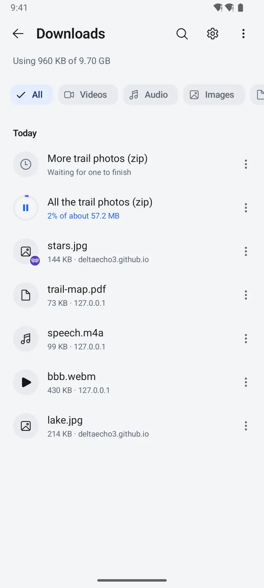
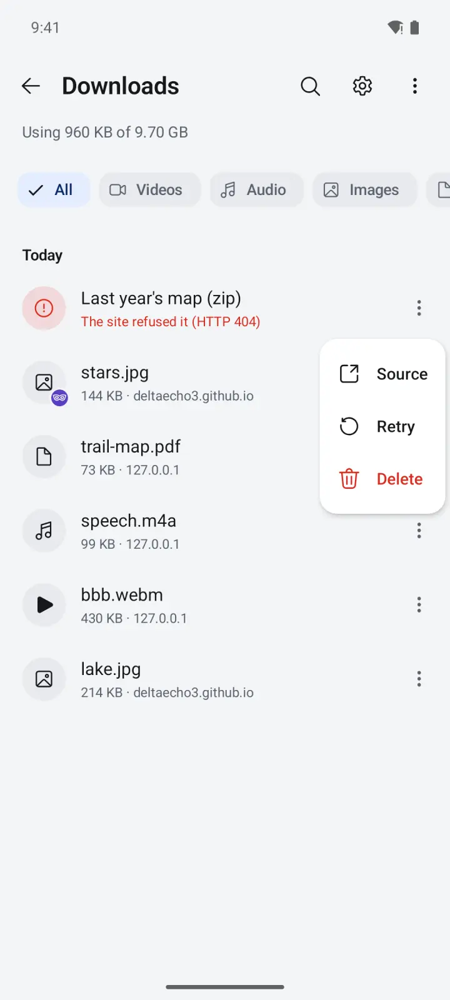
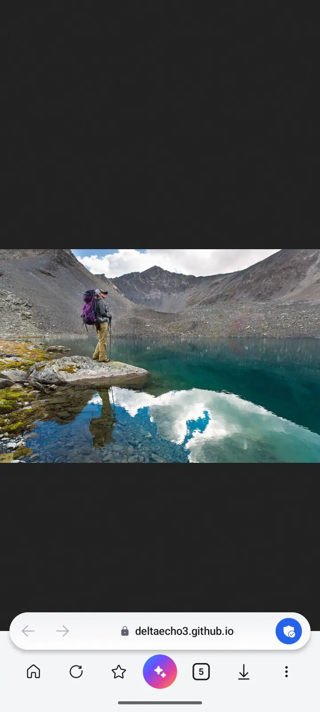
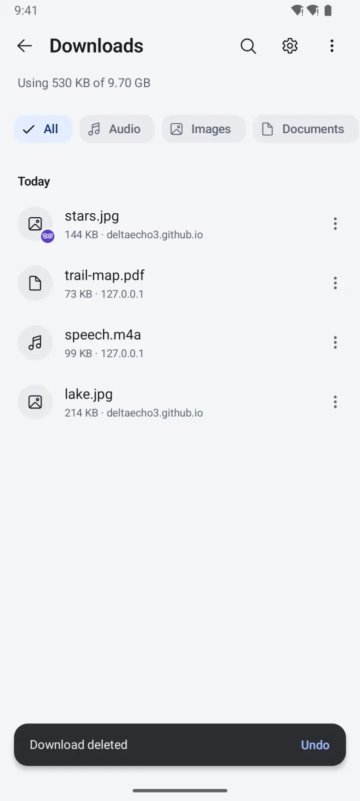
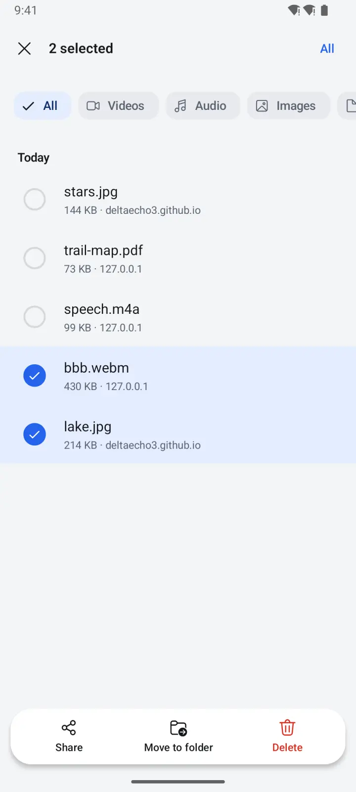

Find, pause and delete downloads
How-to
Open Downloads to see files that are downloading and files you've already saved. Open it from the Downloads button on the bar, the start page's Downloads button, or the Tabs screen's ⋮ menu. If the downloads lock is on, unlock first.
What's on the screen
- At the top: how much space your downloads take, like "Using 32.3 MB of 128 GB", and, if old files delete themselves, how long they're kept ("Files inside Wayward are deleted after 30 days").
- Filter chips by kind: All, Videos, Audio, Images, Documents (only the kinds you have).
- Search (Search downloads) by name or site. When nothing fits: No downloads match.
- The gear opens Download settings, and ⋮ has Select downloads.
- Your downloads, grouped by day (Today, Yesterday, then the date). Each has an icon for its kind, its name and its size and site. A private tab's has a small mask on its icon, and one from a space other than Main ends with that space's dot and name.



While a download runs
Its icon has a ring that fills, and its line shows how far it is ("40% of about 480 MB"), its speed and the time left.
- The ring is the pause button (TalkBack: Pause download). A paused download says Paused with how far it got, and a play mark. Tap it to carry on (TalkBack: Resume download). It picks up where it stopped; if the site can't do that, Wayward says This site can't resume, so the download started again.
- Its ⋮ has Source and Cancel download.
- Waiting for one to finish means it's over your Downloads at once limit (see download settings). Waiting for connection means it waits for your internet to come back.
- A GIF being made says how far it is ("Making GIF · 40%").



Downloads go on in the background, even after you leave Wayward. If Android closes Wayward while one is going through the browser itself, it waits and says Continues when you open Wayward. A private tab's download carries on after you close your last private tab too, without the private tab's cookies.
When a download fails
Its row says Failed, or why, and its ⋮ has Retry. If a site turns the downloader away, Wayward has already tried again through the browser itself, as your tab would ask, with that site's own sign-in (not in a space that keeps its sign-ins apart). For what the messages mean, see why a download didn't work.

Get back to where it came from
Source in a download's ⋮ opens the page it came from in a new tab, in the space it was downloaded in (a private tab for a private tab's download).

Delete downloads
- One: tap its ⋮, then Delete. The row goes at once with Download deleted and Undo, in case you didn't mean it.
- A row with nothing to do but delete (a file that's gone missing, for example) shows a red trash can instead of ⋮.
- For a file saved in your own folder, Delete follows When you delete in the download settings, and may ask whether to delete it from your phone or just take it off the list.

Pick several
Hold a download (or tap ⋮ > Select downloads), then tap the others you want. The top shows how many are picked, with All or None and an X to stop. The bar at the bottom has what fits the ones you picked: Share, Move to folder, Move to Wayward, Delete, and Pause, Resume or Retry for running, paused or failed ones. Deleting several goes at once too, with Undo.
